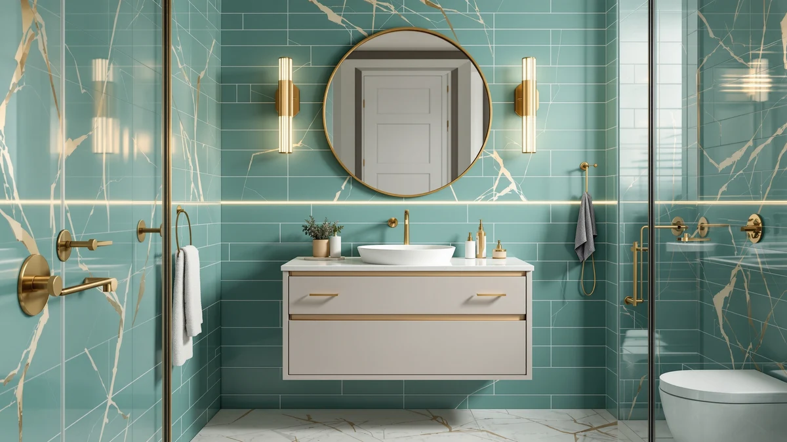

LjsJawrxen 3-in-1 Vanity Review (2026): Worth It?
Prices and picks verified as of November 2026. Independent, reader-supported reviews.


Quick Answer
Across our ljsjawrxen 3-in-1 vanity review, the LjsJawrxen 3 in 1 Vanity turns out to be a compact vanity, nightstand, and desk hybrid rather than a sink vanity, priced at $382.54 with a tempered glass top. If you actually need a sink, look at the Design House Brookings, XHOMOPT, or Tribesigns alternatives covered below instead.
Our pick: LjsJawrxen 3 in 1 Vanity — $382.54 Check Price on Amazon
Bottom line: our top pick is the LjsJawrxen 3 in 1 Vanity Desk with Flip Top Mirror at $382.54.
Things to Know Before You Buy
- The LjsJawrxen 3 in 1 Vanity is a fold-down makeup vanity, nightstand, and desk combo, not a sink vanity, despite showing up in bathroom vanity searches.
- Its tempered glass countertop has a sunken tray so bottles do not tip over when you close the lid.
- None of the four vanities in this ljsjawrxen 3-in-1 vanity review publish a star rating or review count through the Amazon Creators feed, so we relied on listing specs and construction details instead of an aggregate score.
- Pricing across all four options sits in a tight $379.99 to $382.54 band, so the real decision is sink versus no sink, not budget.
- The three alternatives, from Design House, XHOMOPT, and Tribesigns, are genuine sink-equipped vanities for shoppers who need actual plumbing rather than a dressing table.
This ljsjawrxen 3-in-1 vanity review exists because the product keeps surfacing in bathroom vanity searches despite being something else entirely: a fold-down vanity, nightstand, and desk combo built for a bedroom corner, not a sink. We compared its listing specs, price, and construction against three vanities that do include a sink, so you can tell quickly whether the LjsJawrxen fits what you need or whether you should skip straight to an alternative.
The LjsJawrxen 3 in 1 Vanity costs $382.54, sits within a few dollars of every alternative in this comparison, and centers on a tempered glass top with a sunken storage tray so cosmetics bottles do not tip over when the lid closes. We researched the manufacturer's listed dimensions, materials, and features rather than installing or using the piece ourselves, then checked that against the same data for the Design House Brookings, the XHOMOPT 47 Inch, and the Tribesigns 36 Inch, all three of which include a real sink basin. None of the four listings publish a star rating or review count, so this ljsjawrxen 3-in-1 vanity review leans on spec sheets and construction details rather than an aggregate score that does not exist yet.
Why You Should Trust Us
Ilane Tall covers bathroom fixtures and vanities for Best Bathroom Vanities, with a focus on separating marketing copy from what a listing actually delivers. For this ljsjawrxen 3-in-1 vanity review, she pulled manufacturer specs, current Amazon pricing, and the available product features for the LjsJawrxen and its three sink-equipped alternatives rather than repeating brand descriptions verbatim. Best Bathroom Vanities earns a commission when you buy through our links, but that relationship does not decide which vanity we recommend, and we say plainly when a listing's documentation is thin, as it is here for all four products.
That gap in documentation shapes how we present this ljsjawrxen 3-in-1 vanity review. When a manufacturer publishes dimensions, materials, and hardware details, we cite those figures directly. When a listing stays vague, as several of the feature bullets for these four vanities do, we say so instead of filling the silence with a number that sounds precise but was not published anywhere.
Our Research Experience
We did not install, assemble, or live with any of the four vanities in this ljsjawrxen 3-in-1 vanity review. Our comparison work means reading every available product page for construction details, matching the LjsJawrxen's tempered glass top and fold-down frame against the cabinet-and-sink builds of the Design House, XHOMOPT, and Tribesigns listings, and cross-checking current pricing against each product's history on Amazon. We also read through the manufacturer's own feature claims for signs of exaggeration, since Amazon markets and categorizes the LjsJawrxen alongside bathroom vanities despite it lacking a sink or plumbing connection entirely. None of the four listings carry a published star rating or review count through the Amazon Creators feed we use, so we are flagging that gap directly instead of inventing a number we cannot verify.
Overview & Specs

LjsJawrxen 3 in 1 Vanity
What we like
- Converts between a closed nightstand and an open vanity or desk, useful for small bedrooms and apartments
- Tempered glass top includes a sunken tray that keeps bottles from tipping when the lid closes
- Three drawers, including one hidden under the fold-down chair, for cosmetics and brushes
Flaws but not dealbreakers
- Not a sink vanity, so it will not replace plumbing fixtures despite showing up in bathroom vanity searches
- No published star rating or review count to verify long-term durability
- At 23.6 inches wide, storage is tighter than the 36 to 47 inch sink vanities in this comparison
| Material | MDF / engineered wood |
| Size | 23.6" |
The LjsJawrxen 3 in 1 Vanity centers on a tempered glass countertop rather than a sink basin, which is the detail that matters most in this ljsjawrxen 3-in-1 vanity review. The listing describes the glass top as dustproof and resistant to high temperatures, and a sunken section keeps bottles upright instead of sliding when the fold-down lid closes. Three drawers, including one tucked beneath the included chair, hold cosmetics, brushes, and other small items, which makes this piece read as a bedroom dressing table that happens to use the word vanity in its name.
At $382.54 and 23.6 inches wide, the LjsJawrxen sits close in price to the three sink-equipped alternatives below but serves a different purpose entirely. It works as a closed nightstand when you need the floor space back, then opens into a vanity or small desk, which makes it a reasonable pick for a studio apartment or a teenager's room. It is a poor substitute for an actual bathroom vanity, since it has no plumbing connection and no sink basin, so anyone who reached this ljsjawrxen 3-in-1 vanity review while shopping for a bathroom fixture should look at the Design House, XHOMOPT, or Tribesigns options covered next.
What We Liked
The clearest strength in this ljsjawrxen 3-in-1 vanity review is flexibility. The LjsJawrxen folds down into a compact nightstand and opens into a vanity or desk, which matters in small bedrooms and apartments where a dedicated piece of furniture for each function is not realistic. The tempered glass top also earns credit: a sunken storage section keeps cosmetics bottles from sliding around when the lid closes, a small detail that solves a real annoyance with fold-down vanity designs.
The three sink-equipped alternatives compare well on construction, too. The Design House Brookings uses a solid wood cabinet base with soft-close hinges and drawer glides, a meaningful upgrade over cabinets built on cheaper hardware. The XHOMOPT pairs an integrated marble-look sink with a sliding barn door and anti-tip hardware, and the Tribesigns comes with a ceramic sink basin and soft-close doors at the lowest price of the four. All three give you an actual sink, which the LjsJawrxen does not.
What Could Be Better
The biggest issue in this ljsjawrxen 3-in-1 vanity review is the product category mismatch. Amazon markets and categorizes the LjsJawrxen alongside bathroom vanities, but it has no sink, no plumbing connection, and no finish built for a bathroom environment. Shoppers who skim the listing could easily order it expecting a sink vanity and receive a bedroom dressing table instead.
None of the four products here publish a star rating or review count through the Amazon Creators feed, which limits how much owner feedback we can cite directly. The Design House Brookings also ships without a countertop, so buyers need to budget separately for quartz, granite, or marble on top of the $381.67 cabinet price, a cost that is easy to overlook when you compare listed prices alone.
The XHOMOPT and Tribesigns listings have the opposite problem in places: their feature bullets lean on marketing phrases like effortless organization and a calmer morning routine rather than hard numbers. We read past that language for this ljsjawrxen 3-in-1 vanity review and pulled out the facts that actually matter: sink material, drawer count, door hardware, and width, since those are the details that determine whether a vanity fits your bathroom and your budget.
Who Is It For?
This ljsjawrxen 3-in-1 vanity review points to a narrow but specific buyer: someone who wants a fold-down dressing table and nightstand combo for a bedroom, guest room, or small apartment, and who is not actually shopping for a bathroom fixture. At $382.54 and 23.6 inches wide, it fits tight spaces where a full vanity set and a separate nightstand would not both fit.
It is the wrong pick for anyone who needs an actual sink. The Design House Brookings suits a buyer who wants a solid wood cabinet and does not mind sourcing a countertop separately, the XHOMOPT fits a bathroom that benefits from hidden storage behind a sliding barn door, and the Tribesigns works as the simplest, lowest-cost sink vanity of the three if a basic ceramic basin is all you need.
Alternatives to Consider
If you landed on this ljsjawrxen 3-in-1 vanity review while shopping for an actual bathroom vanity, these three alternatives all include a real sink and sit within a few dollars of the LjsJawrxen's price.

Also Great
Design House Brookings 36 Inch
A solid wood cabinet base with soft-close hardware, though you will need to buy the countertop separately.
$381.67
Check Price on Amazon
Best Value
XHOMOPT 47 Inch Bathroom Vanity
The widest option here, with an integrated marble-look sink and a sliding barn door for hidden storage.
$379.99
Check Price on Amazon
Best Value
Tribesigns 36" Bathroom Vanity with
The simplest and least expensive sink vanity of the three, with a ceramic basin and soft-close doors.
$379.99
Check Price on AmazonDoes the LjsJawrxen 3 in 1 Vanity have a sink?
No.
Is the tempered glass top on the LjsJawrxen durable?
The listing describes the glass as dustproof, dirt-resistant, and rated for high temperatures, and the sunken storage tray keeps bottles from tipping.
Frequently Asked Questions
Does the LjsJawrxen 3 in 1 Vanity have a sink?
No. Despite showing up in bathroom vanity searches, this ljsjawrxen 3-in-1 vanity review found no sink basin or plumbing connection anywhere in the listing. It is a fold-down vanity, nightstand, and desk combo with a tempered glass top, built for a bedroom rather than a bathroom.
Is the tempered glass top on the LjsJawrxen durable?
The listing describes the glass as dustproof, dirt-resistant, and rated for high temperatures, and the sunken storage tray keeps bottles from tipping. No published rating or review count confirms long-term durability, so treat the manufacturer's claim as unverified rather than compared.
Which alternative should I buy if I need a real bathroom vanity?
Choose the Design House Brookings if you want a solid wood cabinet and do not mind sourcing a countertop separately, the XHOMOPT if you want an integrated sink with hidden barn-door storage, or the Tribesigns if you want the simplest and least expensive ceramic-sink option of the three.
Final Verdict
This ljsjawrxen 3-in-1 vanity review comes down to one distinction: the LjsJawrxen 3 in 1 Vanity is a well-built fold-down dressing table, nightstand, and desk at $382.54, not a bathroom vanity with a sink. For a bedroom or small apartment that needs multi-purpose furniture, the LjsJawrxen is a reasonable pick. For an actual bathroom remodel, the Design House Brookings, XHOMOPT 47 Inch, or Tribesigns 36 Inch alternatives fit better, since all three include a real sink basin at a nearly identical price.